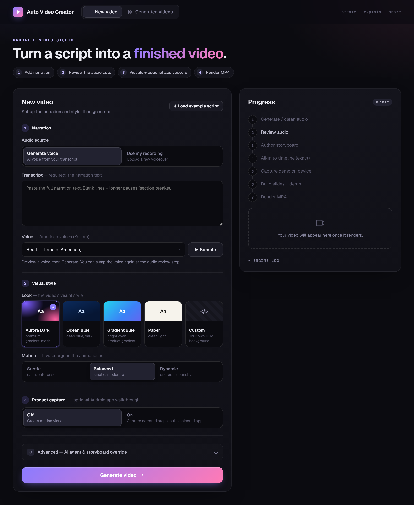

This is the second tool I built around the same idea as my App Doc Generator project: give an agent a narrow, well-defined job, back it with deterministic code wherever correctness actually matters, and never let it be the only thing standing between "probably fine" and what ships. Here the agent's job is different — instead of driving a phone to find and document a feature, it directs a video: it decides how many scenes a piece of narration needs, what each scene should look like, and — optionally — narrates a real walkthrough of an Android app it then goes and performs.
I reused the phone-automation backend from that first project almost unchanged (the Appium driver, the UI-tree parsing, the capture primitives), which is its own small case study in why building infrastructure once pays off the second time you need it.
The problem with narrated videos
Making a decent explainer or product video by hand is three separate skills. You have to record a clean voiceover, which in practice means several takes, some filler words, a stutter you'll want to cut, and pauses that are either too short or oddly long. You have to turn that narration into visuals, which usually means hand-keyframing slides or motion graphics in something like After Effects, scene by scene, timed by ear. And if you want to show the actual product instead of a mockup, you have to record a screen capture and then manually trim and speed it up until it lines up with what you're saying over it — a genuinely fiddly, frame-counting kind of task.
None of those is exotic. Doing all three well, for every video, is what makes narrated video production slow.
What it actually does
Architecture at a glance
One Node process drives the whole thing as a chain of child-process stages, checkpointed to disk so a crash mid-run resumes instead of restarting. There are two ways in (a recording or a generated voice) that both land in the same place: a review gate that always pauses for a human. Past that gate, a single agent call produces the scene plan, an optional device-capture branch runs before rendering, and Remotion turns the result into a video.
Scroll sideways to see the full diagram →
Deciding what's a bad take, without trusting any one signal
The audio-cleanup stage doesn't have a single "is this good" detector — it runs four independent, cheap checks and only unions what they find, then hands the result to a human before committing to anything:
- a filler-word lexicon match against the transcript ("um", "uh", "like");
- a repeated-phrase scan over the transcript text itself, for when you visibly restart a sentence;
- an acoustic repeat detector — MFCC features through a recurrence matrix (the same technique used for finding repeated sections in music) — that catches a phrase spoken twice even when the transcript missed it, because Whisper tends to quietly collapse an immediate repeat into one instance;
- silence detection on the raw waveform.
That last one exists because of a mistake I made and had to undo. The first version detected silence from the gaps between transcribed words — which sounds reasonable until you realize a transcript has no idea about background noise, breathing, or a long pause the model just didn't transcribe anything for. It found 3.5 seconds of silence in a stretch of audio that actually had 85.8 seconds of dead air. Silence detection now runs on the real waveform through ffmpeg, completely independent of what Whisper thinks was said, and the transcript-based version is gone.
The cuts aren't deleted outright either. Pauses get compressed to a floor — 0.7 seconds normally, 1.8 seconds at a paragraph break — rather than removed entirely, so the narration keeps a human rhythm instead of sounding like every breath was surgically closed up. All of this lands on one editable timeline (waveform, color-coded by why each cut was suggested, keyboard shortcuts for split/mark/undo) before a single frame of video gets made.
Teaching an agent to direct, not just write
The scene-planning stage is a real agent call — a headless Claude Code or Copilot CLI process, not a template. It gets the narration as a numbered list of words ("14:whenever 15:you 16:tap...") and a catalog of fourteen scene types (title cards, bullet lists, stat call-outs, comparisons, a dedicated "feature showcase" type for app walkthroughs, and so on), each with its own content shape and guidance on when to use it. Its job is to lay out scenes as spans over that word list — "scene 3 covers words 22 through 31" — and pick a motif and a rough content sketch for each one.
The part I'm most satisfied with is what the agent is not trusted to do: write the final on-screen copy. Once it proposes a span, the actual text for that scene is pulled verbatim from those exact transcript words by ordinary code, not taken from whatever the model typed. That closes off an entire category of bug — a scene's on-screen text can never say something the narration didn't, because it's assembled from the audio's own transcript, not from the model's memory of it. The agent decides structure and pacing; the code guarantees correctness. It's the same split I leaned on in the documentation agent: let the model make judgment calls, never let it be the source of truth for anything that has to be exactly right.
A real scene from the example script looks like this — note the word-span anchors instead of timestamps, so timing is a lookup into the transcript rather than a guess:
{
"id": "s2",
"motif": "bullets",
"span": { "w0": 9, "w1": 23 },
"content": {
"heading": { "text": "Build understanding step by step" },
"items": [
{ "text": "Choose one message", "icon": "target", "at": { "w0": 9, "w1": 11 } },
{ "text": "Break it into small steps", "icon": "list", "at": { "w0": 12, "w1": 16 } }
]
}
}Every span indexes the same word-timed transcript, so a scene and its bullets know exactly which seconds of audio they belong to.
The prompt also has to tell the agent when not to reach for a demo scene: "this helps reps see key fields at a glance" is a conceptual claim, not something to film, while "tap Preferences, then Notifications" names a literal action. Getting that distinction right in the prompt, with worked positive and negative examples, mattered more than any of the rendering code.
Filming a demo without really filming it
The first version of app capture just let the agent drive the phone live, screen recording on. It does not work: an agent reasoning about each tap in real time is slow and hesitant on camera, and a smoke test once recorded 217 seconds of footage for a 19-second slot. Waiting for a language model to think is not a demo — it's dead air with a cursor blinking.
The fix is to never film the thinking. Capture happens in two passes on the same cold-started app state. In the plan pass, nothing is recorded: a headless agent works out how to perform the steps, and every real action it takes — a tap, some typed text, a swipe — is logged as a small, replayable instruction, not just narrated in prose. In the replay pass, the app is reset to the exact same starting screen and the logged instructions are played back mechanically, at a fixed, brisk pace, with the screen recording on the whole time via scrcpy. There's no reasoning left to be slow — it's just executing a script against a UI it already knows will respond the same way, because it's the same app in the same state.
That still leaves a clip paced evenly by replay speed, not by how the narration actually describes each step — one sentence might linger on a screen for three seconds, the next might rush past it in one. warp-clip.mjs fixes that by time-warping the clip piecewise: it knows the real timestamp each action fired during replay and the timestamp it's narrated at, and stretches or compresses each segment between those points independently — speeding a section up, slowing another down, and freeze-holding the last frame if a segment needs to last longer than a reasonable slowdown allows.
It's the video equivalent of the word-by-word text reveal every scene already does: a tap on the "more" icon appears on screen at the exact moment the narration says "tap the more icon," not roughly around then.
Small details that mattered more than I expected
- Generated voices reuse the real-recording pipeline, not a shortcut around it. Synthesized audio still gets fed through the same transcribe-and-align steps a recorded take goes through. It sounds redundant — the TTS engine already knows what it said — but it means word-level timing for a generated voice needed zero new code, and both audio sources end up in the exact same shape by the time the director sees them.
- The older manifest format is derived, not authored twice. An earlier version of this tool used a simpler HTML-slide renderer with its own manifest format, and the capture pipeline still speaks that format. Rather than asking the agent to produce both, the manifest is now generated mechanically from the Motion IR after the fact — one LLM call, two consumers, and the two formats can't drift out of sync with each other.
- The phone-frame compositing came from the documentation project almost untouched. Cropping a screen recording into a bezel image at the right pixel offsets is a small, fiddly problem I'd already solved once. Copying it over — rather than re-deriving the same math — is the actual payoff of having built the first tool.
The rest of the app
The review gate is a real timeline editor, not a confirmation dialog: a waveform, segments color-coded by why each was flagged (retake, filler, correction, dead air), split and undo with keyboard shortcuts, and a "preview as exported" toggle so what you hear while editing matches what actually ships. Past that, there's a "regenerate" path with two modes — redo everything from scratch, or keep the cleaned audio and transcript and only redo the director and render — so changing the visual style doesn't force re-recording a voiceover that was already fine. And for the older slide renderer, there's an in-browser HTML editor: open the generated composition, hand-edit it, and re-render without re-running the rest of the pipeline.
What I'd change
An unmatched segment can silently end up with zero duration
The alignment step that maps narration text onto transcript timing does a longest-common-subsequence match; if a segment somehow doesn't match any words at all, it currently falls back to a zero-length span rather than raising a visible error. It's rare, but it should fail loudly instead of producing an instant scene no one asked for.
The phone-frame geometry is hardcoded, not derived
The pixel offsets that position a captured clip inside its bezel image are constants in the code, marked as "confirmed" rather than computed from the frame asset itself. Swapping in a new device frame means recalculating those by hand instead of it just working.
Running two renderers is real weight to carry
Remotion is the default and the one I'd point anyone to, but the older HTML/GSAP renderer is still alive because the capture pipeline's manifest format predates the newer one. It works, but it's a second rendering backend I have to keep in my head.
Capture determinism rests on one assumption I'd like to remove
The plan and replay passes only produce the same result because the app is force-stopped and relaunched to what's assumed to be the identical starting screen both times. That's true for most apps in practice, but it's an assumption, not a guarantee, and it's the one part of the capture pipeline I'd trust least under a strange edge case.
What building this taught me
The instinct going in was that the interesting problem would be the rendering — getting motion graphics to look good. It didn't turn out that way. The genuinely hard parts were both about time: deciding which seconds of a recording deserved to survive, and making a screen recording agree with a sentence about when each thing in it happens. Both got solved the same way — not by making any single step smarter, but by refusing to let one signal, or one model call, be the only thing deciding an outcome that had to be right. Four cheap detectors instead of one clever one. A model that proposes structure, and code that assembles the actual words. A capture pass that plans once and only ever films the boring, deterministic part. None of that is a sophisticated idea. It's just the same lesson from the last project, applied to a very different pipeline.